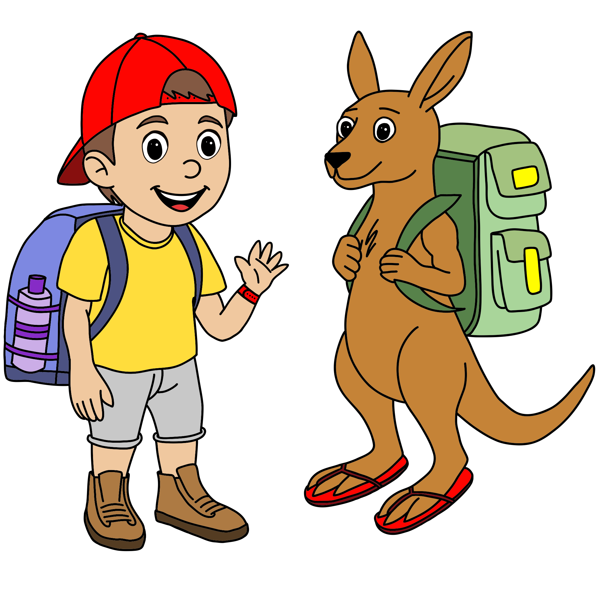

David Kulikowski is a father of two children (Harvey 3, Mina 1), and married to his wife Milena. His children’s stories are inspired by the small moments that shape family life; the adventures, the worries, the laughter, and the imagination that fills childhood. The best stories help children feel safe, confident and curious about the world around them.

Author Biography: David’s books are written to be enjoyed together, creating special moments between children and the adults who read with them. Each story is designed not only to spark imagination, but also to support conversations, learning and connection at home or in the classroom.
With guidance from his wife Milena, an experienced teacher, David’s stories are accompanied by teaching resources that are thoughtfully shaped to align with the Australian Curriculum, making them both engaging and practical for families and educators.
His first book, Harvey’s Last Day in Australia, was inspired by his family’s international move when his son Harvey was only three months old. Like many big life changes, the journey came with a mix of excitement, uncertainty and emotion. Creating this story became a meaningful way to reflect on those experiences and help families navigate similar changes.
Having studied art in his younger years, writing and illustrating this book also allowed David to reconnect with a passion for creativity.
The creative design, structure and layout for this book was led by Creative Mass, an Adelaide-based design and marketing company. Please visit the Contact page for their contact details.